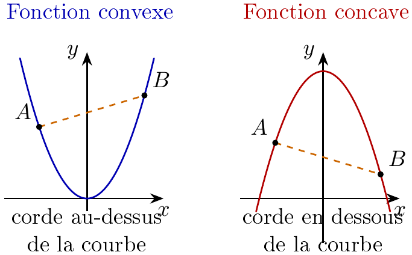
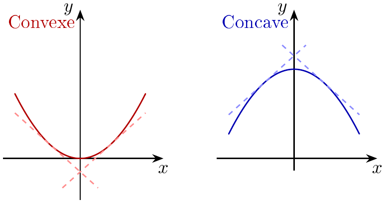
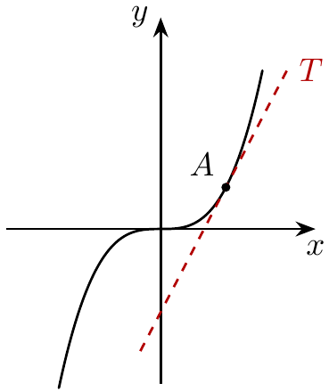
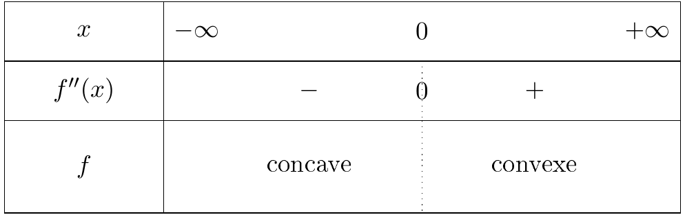

Chapitre 2 : Complément sur la dérivation
Terminale spécialité · Chapitre 2 — Complément sur la dérivation · cours de Frederik de Peyrelongue
I. Rappels sur la dérivation
Nombre dérivé
Soit $f$ une fonction définie sur un intervalle $I$ et $a\in\R$.
On appelle nombre dérivé en $a$,
si elle existe.
Si $f'(a)$ existe, alors la fonction $f$ est dérivable en $a$.
Interprétation géométrique. Le nombre dérivé $f'(a)$ de la fonction $f$ en un point $M\bigl(a\,;f(a)\bigr)$ correspond à la pente de la tangente à la courbe au point $M$.
L'équation de la tangente au point $A\bigl(a\,;f(a)\bigr)$ :
Les fonctions dérivées de référence
| Fonction | $D_{f}$ | Dérivée | $D_{f'}$ |
| $f(x)=k$ | $\R$ | $f'(x)=0$ | $\R$ |
| $f(x)=x$ | $\R$ | $f'(x)=1$ | $\R$ |
| $f(x)=x^{n}$, $n\in\N^{*}$ | $\R$ | $f'(x)=n\,x^{n-1}$ | $\R$ |
| $f(x)=\dfrac{1}{x}$ | $\R^{*}$ | $f'(x)=-\dfrac{1}{x^{2}}$ | $\R^{*}$ |
| $f(x)=\dfrac{1}{x^{n}}$, $n\in\N^{*}$ | $\R^{*}$ | $f'(x)=-\dfrac{n}{x^{n+1}}$ | $\R^{*}$ |
| $f(x)=\sqrt{x}$ | $[0\,;+\infty[$ | $f'(x)=\dfrac{1}{2\sqrt{x}}$ | $]0\,;+\infty[$ |
| $f(x)=\e^{x}$ | $\R$ | $f'(x)=\e^{x}$ | $\R$ |
| $f(x)=\sin x$ | $\R$ | $f'(x)=\cos x$ | $\R$ |
| $f(x)=\cos x$ | $\R$ | $f'(x)=-\sin x$ | $\R$ |
Opérations sur les fonctions dérivées
| Dérivée de la somme | $(u+v)'=u'+v'$ |
| Dérivée du produit par un scalaire | $(ku)'=ku'$ |
| Dérivée du produit | $(uv)'=u'v+uv'$ |
| Dérivée de l'inverse | $\left(\dfrac{1}{u}\right)'=-\dfrac{u'}{u^{2}}$ |
| Dérivée du quotient | $\left(\dfrac{u}{v}\right)'=\dfrac{u'v-uv'}{v^{2}}$ |
Sens de variation, extremum local et dérivée
Soit $f$ une fonction dérivable sur un intervalle $I$.
- Si, pour tout réel $x$ de $I$, $f'(x)>0$ sauf en un nombre fini de points où elle s'annule, alors la fonction $f$ est strictement croissante sur $I$.
- Si, pour tout réel $x$ de $I$, $f'(x)<0$ sauf en un nombre fini de points où elle s'annule, alors la fonction $f$ est strictement décroissante sur $I$.
- Si, pour tout réel $x$ de $I$, $f'(x)=0$, alors $f$ est constante.
Soit $f$ une fonction dérivable sur un intervalle $I$ ouvert et $a\in I$.
- Si $f$ admet un extremum en $a$, alors $f'(a)=0$.
- Si $f'(a)=0$ et si $f'$ change de signe en $a$, alors $f$ admet un extremum en $a$.
Contre-exemple. $f(x)=x^{3}$ : $f'(0)=0$ et pourtant $f(0)$ n'est pas un extremum !
II. Composée de deux fonctions
Définition
Soient $u$ une fonction définie sur un intervalle $I$ à valeurs dans un intervalle $J$, et $v$ une fonction définie sur l'intervalle $J$.
La composée de $u$ par $v$, notée $v\circ u$, est la fonction définie par
On considère la fonction $f$ définie par $f(x)=\sqrt{x-3}$.
La fonction $f$ est la composée de deux fonctions $u$ et $v$ telles que
Les fonctions $u$ et $v$ sont définies par $u(x)=x-3$ et $v(x)=\sqrt{x}$.
On dit que la fonction $f$ est la composée de $u$ par $v$ et on note
Identifier la composée de deux fonctions
On considère la fonction $f$ définie par $f(x)=\dfrac{1}{x^{2}}$.
Identifier la composée de deux fonctions dans la fonction $f$.
Dans $f$, on reconnaît la fonction inverse et la fonction carré.
Si on pose $u(x)=x^{2}$ et $v(x)=\dfrac{1}{x}$, on a alors
La fonction $f$ est la composée de la fonction carré par la fonction inverse.
2.3 Composer deux fonctions
On considère les fonctions $u$ et $v$ définies par $u(x)=x^{2}+x$ et $v(x)=\dfrac{x}{x+1}$.
Exprimer les fonctions $v\circ u$ et $u\circ v$ en fonction de $x$.
On a $u(x)=x^{2}+x$ et $v(x)=\dfrac{x}{x+1}$.
III. Formules de dérivation d'une fonction composée
Dérivation d'une fonction composée
Soient $u$ une fonction définie et dérivable sur un intervalle $I$ à valeurs dans un intervalle $J$, et $v$ une fonction définie et dérivable sur l'intervalle $J$. Alors la fonction $v\circ u$ est dérivable sur $I$ et
c'est-à-dire que, pour tout $x\in I$, on a
Soit $x\in I$ et $h>0$ : $v\circ u$ est dérivable en $x$ si $\dfrac{v\circ u\,(x+h)-v\circ u\,(x)}{h}$ admet une limite lorsque $h$ tend vers $0$.
Or la fonction $u$ est dérivable pour tout $x\in I$, donc
Posons $H=u(x+h)-u(x)$, donc $u(x+h)=u(x)+H$.
La fonction $u$ est continue, donc $\lim\limits_{h\to 0}u(x+h)=u(x)$, et donc
Or la fonction $v$ est dérivable sur $J$, donc
Finalement,
Cas particuliers de fonctions composées
| Fonction | Dérivée |
| $u^{n}$ avec $n\in\mathbb{Z}^{*}$ | $n\,u'\,u^{n-1}$ |
| $\e^{u}$ | $u'\,\e^{u}$ |
| $\sqrt{u}$ | $\dfrac{u'}{2\sqrt{u}}$ |
| $\ln u$ | $\dfrac{u'}{u}$ |
| $\cos u$ | $-u'\sin u$ |
| $\sin u$ | $u'\cos u$ |
Déterminer la dérivée de fonctions composées
Déterminer les dérivées des fonctions définies par :
a) On pose $f(x)=\bigl(u(x)\bigr)^{4}$ avec $u(x)=2x^{2}+3x-3$, d'où $u'(x)=4x+3$.
b) On pose $g(x)=2\,\e^{u(x)}$ avec $u(x)=\dfrac{1}{x}$, d'où $u'(x)=-\dfrac{1}{x^{2}}$.
c) On pose $h(x)=\ln\bigl(u(x)\bigr)$ avec $u(x)=2x-x^{2}$, d'où $u'(x)=2-2x$.
Déterminer la dérivée d'une fonction composée (cas général)
Déterminer la dérivée de la fonction $f$ définie sur $\R$ par $f(x)=\sqrt{x^{2}+1}$.
On considère les fonctions $u$ et $v$ définies par $u(x)=x^{2}+1$ et $v(x)=\sqrt{x}$.
Alors $f(x)=\sqrt{x^{2}+1}=v\bigl(u(x)\bigr)$.
On a $u'(x)=2x$ et $v'(x)=\dfrac{1}{2\sqrt{x}}$.
Donc
IV. Convexité
Dérivée seconde
Soit $f$ une fonction dérivable sur un intervalle $I$. On note $f'$ sa fonction dérivée.
Lorsque $f'$ est dérivable sur $I$, on note $f''$ sa dérivée. $f''$ est appelée la dérivée seconde de $f$ sur $I$.
Remarque. $f''$ se lit « $f$ seconde ».
Soit $f$ la fonction polynôme définie sur $\R$ par $f(x)=3x^{3}+2x+5$.
$f$ est dérivable sur $\R$, car c'est une fonction polynôme :
$f'$ est dérivable sur $\R$, car c'est une fonction polynôme :
4.2 Fonctions convexes
Soit $f$ une fonction définie sur un intervalle $I$ et $\mathcal{C}_{f}$ la représentation graphique de la fonction $f$ dans un repère orthogonal.
- Dire que $f$ est convexe sur $I$ signifie que, pour tout point $A$ et $B$ distincts de $\mathcal{C}_{f}$, le segment $[AB]$ est au-dessus de la courbe $\mathcal{C}_{f}$ entre les points $A$ et $B$.
- Dire que $f$ est concave sur $I$ signifie que, pour tout point $A$ et $B$ distincts de $\mathcal{C}_{f}$, le segment $[AB]$ est en dessous de la courbe $\mathcal{C}_{f}$ entre les points $A$ et $B$.

Exemple. La fonction carré est une fonction convexe sur $\R$. La fonction racine $x\longmapsto\sqrt{x}$ est concave sur $\R^{+}$.
Soit $f$ une fonction définie sur un intervalle $I$ contenant $a$ et $b$ ($a<b$), et $t\in]0\,;1[$.
- Si $f$ est convexe, alors $f\bigl[ta+(1-t)b\bigr]\leqslant t\,f(a)+(1-t)f(b)$.
- Si $f$ est concave, alors $f\bigl[ta+(1-t)b\bigr]\geqslant t\,f(a)+(1-t)f(b)$.
Cas où $f$ est convexe.
Soient $A\bigl(a\,;f(a)\bigr)$, $B\bigl(b\,;f(b)\bigr)$ et $M\bigl(x\,;f(x)\bigr)$.
Soit $x\in[a\,;b]$ : on peut paramétrer $x$ avec la variable $t$ :
$M$ a pour ordonnée $y_{M}=f(x)=f\bigl(ta+(1-t)b\bigr)$.
$N$ est le point de la droite $(AB)$ d'abscisse $x=ta+(1-t)b$.
La droite $(AB)$ a pour équation
Donc
Comme $f$ est convexe, $y_{M}\leqslant y_{N}$, donc
Soit $f$ une fonction définie sur un intervalle $I$ contenant $a$ et $b$ ($a<b$) et $t\in]0\,;1[$.
- Si $f$ est convexe, alors $f\left[\dfrac{a+b}{2}\right]\leqslant\dfrac{f(a)+f(b)}{2}$.
- Si $f$ est concave, alors $f\left[\dfrac{a+b}{2}\right]\geqslant\dfrac{f(a)+f(b)}{2}$.
Prendre $t=\dfrac{1}{2}$ dans le théorème précédent.
Application.
Convexité et tangente
Soit $f$ une fonction dérivable sur un intervalle $I$ et $\mathcal{C}_{f}$ la représentation graphique de la fonction $f$ dans un repère.
- Dire que $f$ est convexe sur $I$ signifie que, sur l'intervalle $I$, la courbe $\mathcal{C}_{f}$ est au-dessus de chacune de ses tangentes.
- Dire que $f$ est concave sur $I$ signifie que, sur l'intervalle $I$, la courbe $\mathcal{C}_{f}$ est en dessous de chacune de ses tangentes.

Soit $f$ une fonction définie et deux fois dérivable sur un intervalle $I$. Les quatre propositions suivantes sont équivalentes :
- $f$ est convexe sur $I$ ;
- la courbe $\mathcal{C}_{f}$ représentative de $f$ est entièrement située au-dessus de ses tangentes ;
- $f'$ est croissante sur $I$ ;
- $f''\geqslant 0$ sur $I$.
Montrons que $3\Longrightarrow 2$.
Soit $f$ une fonction définie et dérivable sur un intervalle $I$ et $a\in I$. Soit $T$ la tangente à $\mathcal{C}_{f}$ au point d'abscisse $a$ :
Pour montrer que $\mathcal{C}_{f}$ est au-dessus de $T$, on va étudier la fonction $g=f-T$ :
La fonction $g$ est dérivable, $g'(x)=f'(x)-f'(a)$ et $g'(a)=0$.
La fonction $f'$ est croissante, donc $\forall x\geqslant a$, $f'(x)\geqslant f'(a)$, d'où $g'(x)\geqslant 0$ pour $x\geqslant a$ ; et $\forall x\in I$ avec $x<a$, $f'(x)<f'(a)$, d'où $g'(x)<0$ pour $x<a$.
Donc la fonction $g$ est croissante pour $x\geqslant a$ et décroissante pour $x<a$.
Pour tout $x\in I$ avec $x\geqslant a$, $g(x)\geqslant g(a)$ ; et pour tout $x<a$, $g(x)>g(a)$ ; or $g(a)=0$.
Finalement, $\forall a\in I$, $g(x)\geqslant 0$ : donc $\mathcal{C}_{f}$ est au-dessus de $T$.
Conclusion. $f'$ est croissante sur $I$ $\Longrightarrow$ la courbe $\mathcal{C}_{f}$ représentative de $f$ est entièrement située au-dessus de ses tangentes.
Or les propriétés 1 et 2 sont équivalentes (admises) et les propriétés 3 et 4 sont équivalentes (propriété de la dérivation).
Point d'inflexion
$f$ est une fonction dérivable sur $I$ et $a\in I$. $\mathcal{C}_{f}$ est la représentation graphique de la fonction $f$ dans un repère.
Dire que $A\bigl(a\,;f(a)\bigr)$ est un point d'inflexion de $\mathcal{C}_{f}$ signifie qu'au point $A$ la courbe $\mathcal{C}_{f}$ traverse sa tangente.
$f$ est une fonction deux fois dérivable sur $I$. $\mathcal{C}_{f}$ est la représentation graphique de la fonction $f$ dans un repère.
$A\bigl(a\,;f(a)\bigr)$ est un point d'inflexion de $\mathcal{C}_{f}$ si et seulement si $f''$ s'annule en $a$ et change de signe.
$f : x\longmapsto x^{3}$

